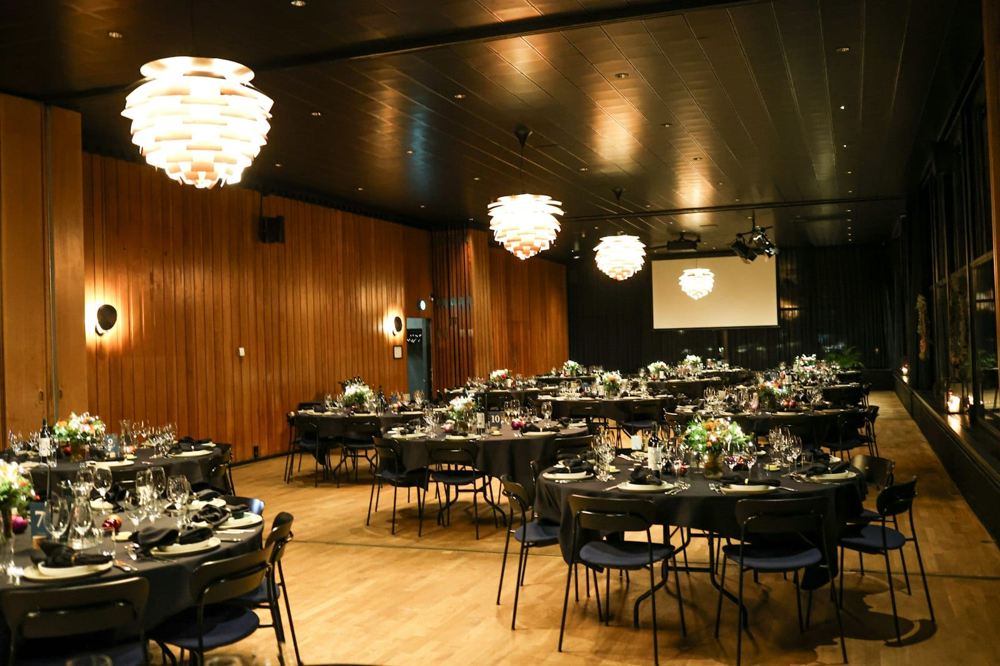

PLANNING
What your venue does to the sound
The same band sounds different in a glass atrium and a carpeted ballroom. Here's why, in plain words, the one test you can do yourself in an empty venue, and what to tell the band before they load in.

- Glass, marble and concrete throw the crisp part of the sound back at the guests and feel harsh. Carpet and drapes soak it up and leave the low end booming. The band tunes for one or the other.
- Echo blurs speech. Clap once in the empty venue: if the sound hangs for more than a second, the toasts need planning.
- Where the speakers point matters more than how big they are. Smaller speakers, closer to the tables, aimed at people, beat a big pair at the front.
Same band, different night #
You heard the band at a showcase in a hotel ballroom and they sounded warm and easy. At your venue, a converted warehouse with a glass wall, the same band at the same level sounds sharp, the toasts are hard to follow, and by nine everyone is shouting. The band is the same. The glass wall is doing the rest.
Here is what a venue does to sound, in plain words, and what to tell the band so they arrive ready for it.
Two kinds of sound come out of a loudspeaker #
The first is the low part, the thump of the bass drum and the bass guitar. Those sound waves are long, and long waves pass through walls, roll down a corridor and arrive in the ballroom next door as a thump with no music attached. That thump is the complaint your catering manager gets from the other event.
The second is the crisp part: the consonants in a voice, the snap of a snare drum, the shimmer of a cymbal. Those waves are short, and short waves get soaked up by anything soft, especially people. Two hundred guests in wool and cotton are a wall of absorption that was missing at sound check, which is why a band that sounded fine in an empty ballroom at three can turn muddy at eight.
Hard surfaces and soft ones #
Glass, marble, tile and polished concrete bounce the crisp part straight back at the guests. Everything feels harsh and tiring at a level that would be comfortable on carpet, and the band turns down to take the edge off, and the bass goes with it.
A carpeted ballroom with drapes does the reverse. The fabric swallows the crisp part, and the low end hangs there with nothing to tame it. The band ends up cutting the bass and brightening everything else.
Both are fine to play in. They are different settings, and the band needs to know which one before the truck is packed, because a glass atrium at cocktail hour often needs no subwoofer at all, and a carpeted ballroom needs a different set of speakers than a glass one.

Echo, and a test you can do yourself #
Every space holds sound for a moment after it stops. In a carpeted ballroom that moment is under a second. In a stone church or a glass atrium it can be two or three seconds. In that long tail, each syllable is still hanging in the air when the next one arrives, and the words blur: fifteen starts to sound like sixteen. A 2025 study of university dining halls found that the less echo a space has, the more of the speech people understand, which matters most during the toasts.
You can measure this without any equipment. Stand in the middle of the empty venue, clap once, hard, and listen. If the sound stops almost at once, the speeches will be easy. If it hangs for a second or more, tell the band. They will bring the speakers closer to the tables and keep the microphone level lower, and the toasts will still land.
The full venue will have less echo than the empty one. A 2020 study found that sound-absorbing panels placed upright near the diners did more for speech than the same panels on the ceiling. Guests are upright absorbers near the diners. Two hundred of them change the space the moment they walk in.
Where the speakers go #
The venue's walls are fixed by the time the band arrives. Where the sound starts, and where it points, is up to the band. Speakers aimed across a hall at a glass wall set the whole space ringing. Speakers raised to head height and aimed at people put most of the sound into bodies and clothing, which soak it up.
How close the speakers are does more than how big they are. Halving the distance between a speaker and a listener adds about six decibels for that listener, a clear notch up on the volume knob, without anyone touching it. So in a long hall, a second small pair of speakers halfway back covers the last tables better than a bigger pair at the front ever will, and the guests up front stop paying for it.

How we handle it #
We ask about the materials and the ceiling before we quote, and we walk the venue when we can. From that we decide which speakers come, where they point, and whether a subwoofer comes at all. The band loads in knowing whether the space is glass or carpet, and sets up for the full space rather than the empty one.
Sources
- Bottalico, P., Nudelman, C. J., and Tardini, V. (2025). Evaluating speech intelligibility across reverberant conditions in university dining halls. Building Acoustics, 33(1). Abstract
- Acoustical Science and Technology (2020). The effects of ceiling height and absorber placement on speech intelligibility in simulated restaurants, 41(1). J-STAGE